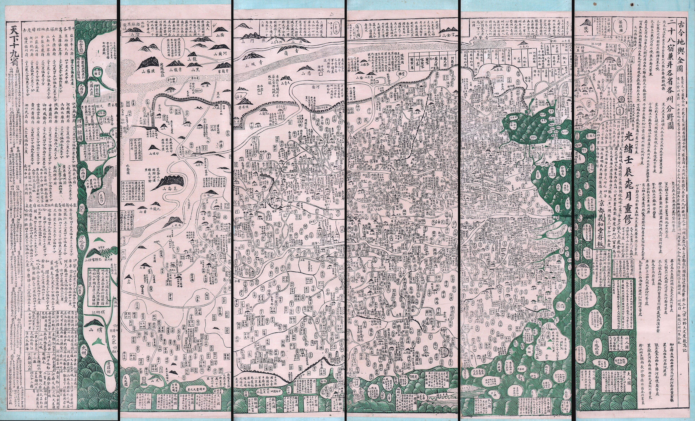
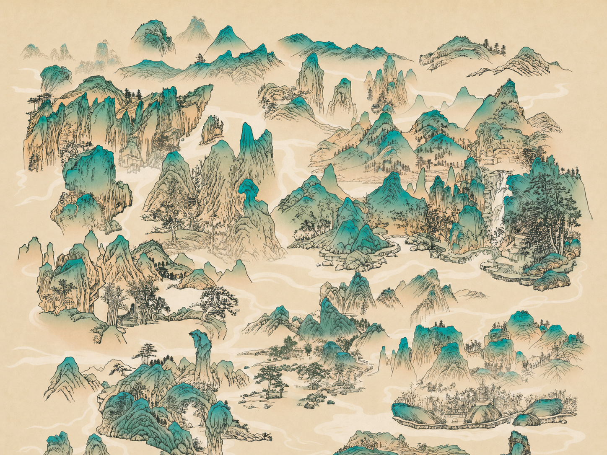

年谱数字人文
黄宾虹
生命舆图
生命舆图
1865—1955
一条朱砂线标出四次居所转换；青线标出当年的往返游历。
一条朱砂线标出四次居所转换；青线标出当年的往返游历。
迁居主线 走过后留痕
当年往返 只在该年点亮
虹
当前阅读
金华出生，祖籍徽州。
行动 出生
1865
金华 · 出生


此页收录黄宾虹存世图像的212件作品，上起1869年，下至1955年，横跨八十六载。其中九十件为实景山水——他登黄山、入青城、溯嘉陵、渡漓江，以步履丈量山川而后以笔墨重构之。1933年入川是分水岭：蜀游山水册与青城山图标志他从清润疏淡的"白宾虹"转向黑密厚重的"黑宾虹"，晚年变法由此始。七十八件作品明确为友人而作——每一幅斋馆图、每一次命题画，都是他与同时代学人交游的信物。左图标记名山胜水，右侧按题材分类陈列；点击地名看该地全部存世画作，点击单幅可放大观览。带★者为该系列中尤为重要的作品。